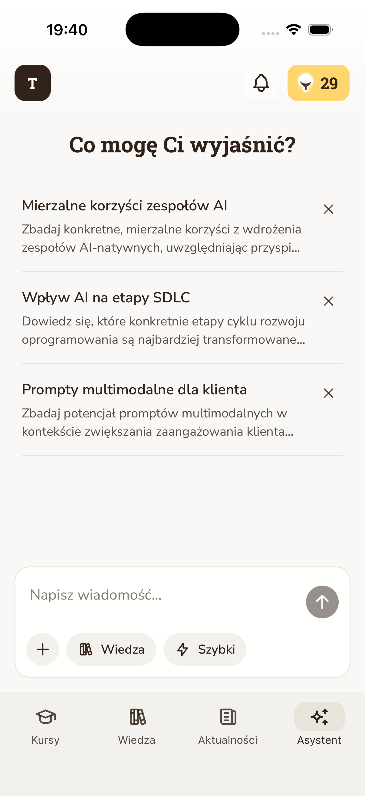
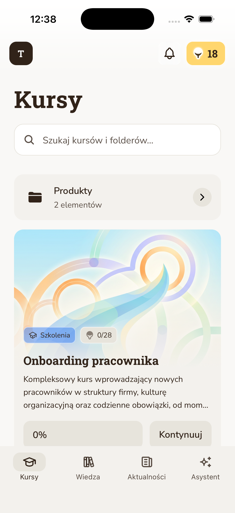
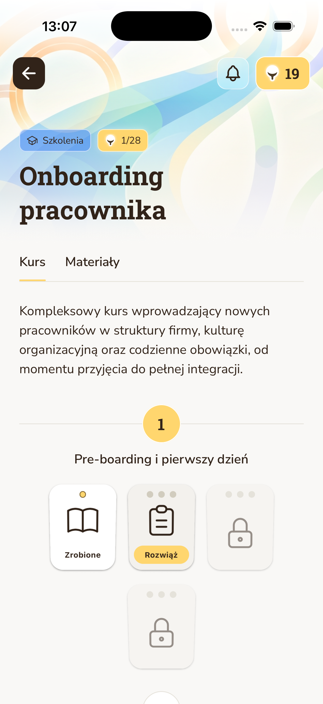

Back to story
Ongoing / medium case


Jasne.ai.
An AI-native learning management system and employee-success app direction, shown as a workflow that learns with people instead of a set of static screens.



How the learning workflow moves.
Draft narrative
The product lesson
Jasne.ai makes the AI-native side of UX RULER concrete. The important story is not "AI in learning"; it is how AI changes the distance between knowledge, behavior, support, and product feedback.
The case should keep its experimental tone, but the flow now gives it the same artifact-first confidence as the Lendi map.
Sections to fill
Case-study shape
- What employee learning or success problem the product targets.
- What makes the LMS AI-native instead of AI-assisted.
- How the mobile experience supports learning in the flow of work.
- Which signals should show learning, behavior change, or adoption.
- Which screenshots or short videos best explain the product.